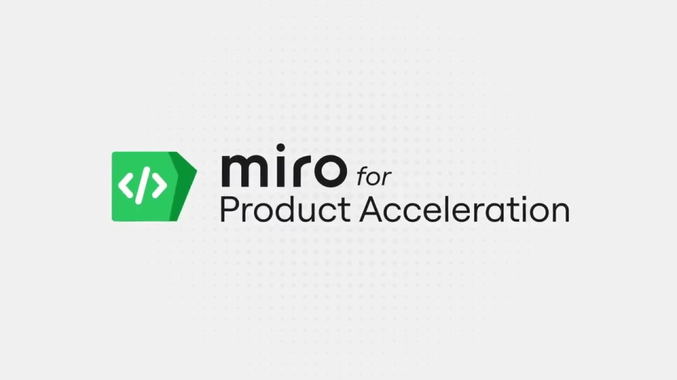
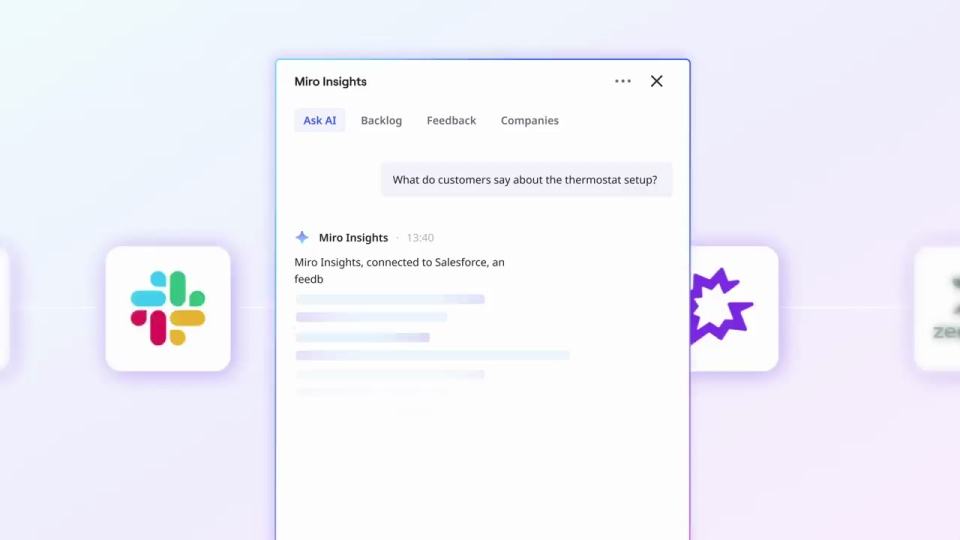
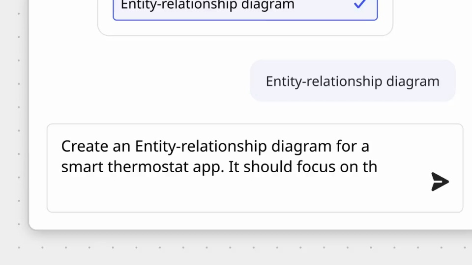
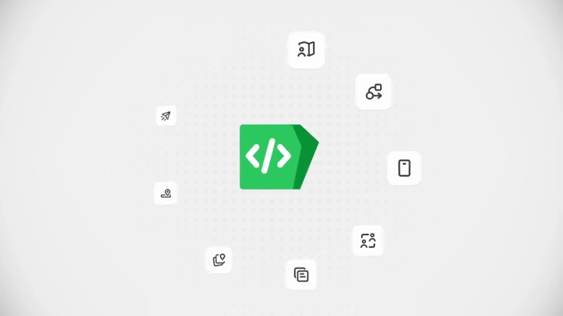

Miro / V351
Miro｜产品发布合集
用同一个产品项目贯穿目标、研究、设计与开发。每次换视图都保留项目名称或关键问题，让长片读成一个持续推进的工作流程。
构图与编排 可播放 · 可替换内容
整体编排规则示例
查看 HTML 源码
<!doctype html><html lang="zh-CN"><meta charset="utf-8"><meta name="viewport" content="width=device-width,initial-scale=1"><title>Miro｜产品发布合集 · sequence</title><style>html,body{margin:0;width:100%;height:100%;overflow:hidden;background:#fbfaf7}canvas{display:block;width:100%;height:100%;object-fit:contain}</style><body data-mode="sequence"><canvas width="1000" height="600"></canvas><script src="data.js"></script><script src="common.js"></script><script src="scene.js"></script><script src="bridge.js"></script></body></html>画面元素便签协作者游标目标表时间线洞察卡手机原型文档架构图
MOTION LANGUAGE
动作与构图
局部动作 · 构图规则
01
先把团队面对的问题放在一起
黄色开场后切到浅色画布，业务目标卡与带名字的游标逐步加入。大问题句居中，便签在周边响应；不要同时铺满目标、研究和原型。
02
目标先变成可安排的工作
目标先变成可安排的工作规则示例
查看 HTML 源码
<!doctype html><html lang="zh-CN"><meta charset="utf-8"><meta name="viewport" content="width=device-width,initial-scale=1"><title>Miro｜产品发布合集 · sequence</title><style>html,body{margin:0;width:100%;height:100%;overflow:hidden;background:#fbfaf7}canvas{display:block;width:100%;height:100%;object-fit:contain}</style><body data-mode="clip" data-start="53" data-end="59"><canvas width="1000" height="600"></canvas><script src="data.js"></script><script src="common.js"></script><script src="scene.js"></script><script src="bridge.js"></script></body></html>目标表、里程碑时间线与看板依次接力。表格行与甘特条保持同色项目标记，右侧助理面板只辅助解释当前一步。
03
让用户洞察真正进入原型
让用户洞察真正进入原型规则示例
查看 HTML 源码
<!doctype html><html lang="zh-CN"><meta charset="utf-8"><meta name="viewport" content="width=device-width,initial-scale=1"><title>Miro｜产品发布合集 · sequence</title><style>html,body{margin:0;width:100%;height:100%;overflow:hidden;background:#fbfaf7}canvas{display:block;width:100%;height:100%;object-fit:contain}</style><body data-mode="clip" data-start="93" data-end="101"><canvas width="1000" height="600"></canvas><script src="data.js"></script><script src="common.js"></script><script src="scene.js"></script><script src="bridge.js"></script></body></html>把反馈整理成洞察卡，再从卡片打开生成菜单，转到手机原型。输入问题、选择操作、生成结果要顺序出现，避免用无关手机页面替代结果。
04
最后把设计交给开发
产品说明、实体关系图、手机界面和代码工作区依次出现。每次保留前一步的小缩略或同名标题，用整体时间线说明从策略到交付的完整链路。
05
换项目要连同上下游一起换
准备同一主题的业务目标、三条洞察、一个原型和开发说明。便签颜色只表示分组；手机与文档保持白底深字，紫、蓝、粉作为辅助，不增加新的主色。
SEQUENCE
段落与节奏
点击段落，定位到上方编排示意。




画面参考 · 离散静帧
KEEP THE RELATIONSHIPS
制作其他主题
- 替换完整项目与协作者；保留目标→研究→原型→架构→交付的因果链。
制作约束
便签 / 协作者游标 / 目标表 / 时间线 / 洞察卡 / 手机原型 / 文档 / 架构图
- 黄色开场后切到浅色画布，业务目标卡与带名字的游标逐步加入。大问题句居中，便签在周边响应；不要同时铺满目标、研究和原型。
- 目标表、里程碑时间线与看板依次接力。表格行与甘特条保持同色项目标记，右侧助理面板只辅助解释当前一步。
- 把反馈整理成洞察卡，再从卡片打开生成菜单，转到手机原型。输入问题、选择操作、生成结果要顺序出现，避免用无关手机页面替代结果。
- 产品说明、实体关系图、手机界面和代码工作区依次出现。每次保留前一步的小缩略或同名标题，用整体时间线说明从策略到交付的完整链路。
- 准备同一主题的业务目标、三条洞察、一个原型和开发说明。便签颜色只表示分组；手机与文档保持白底深字，紫、蓝、粉作为辅助，不增加新的主色。